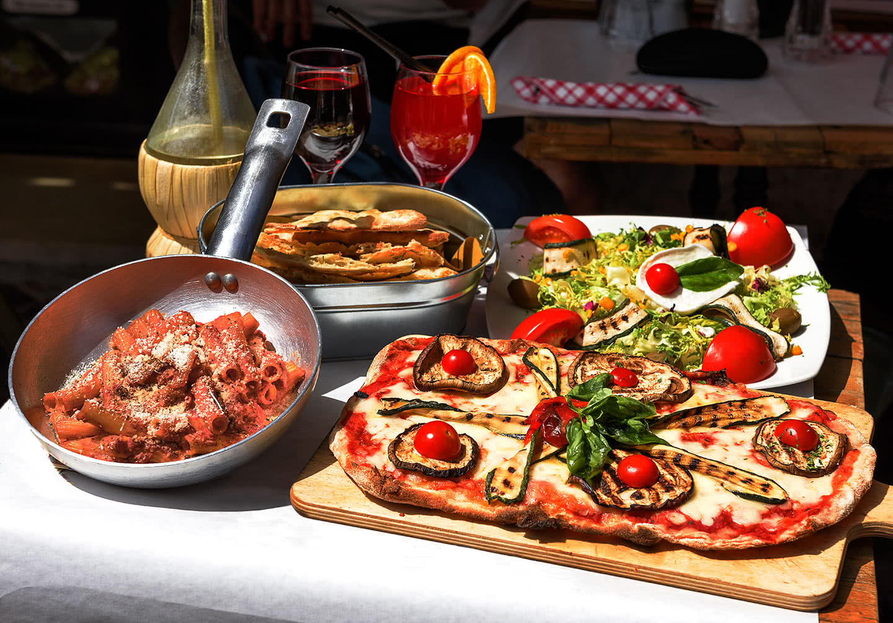
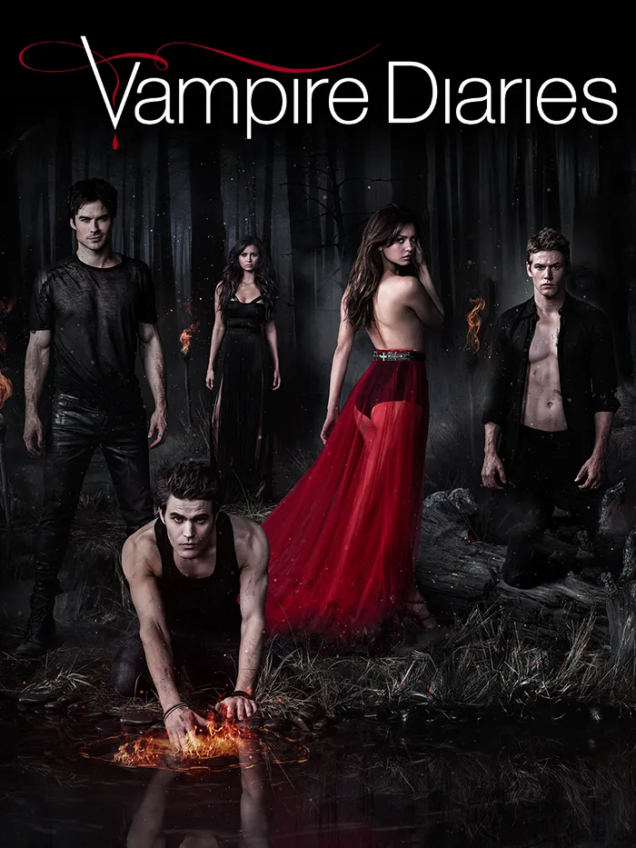
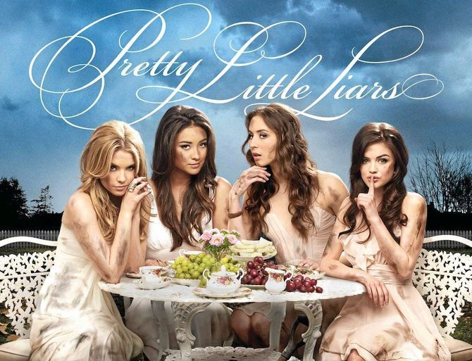
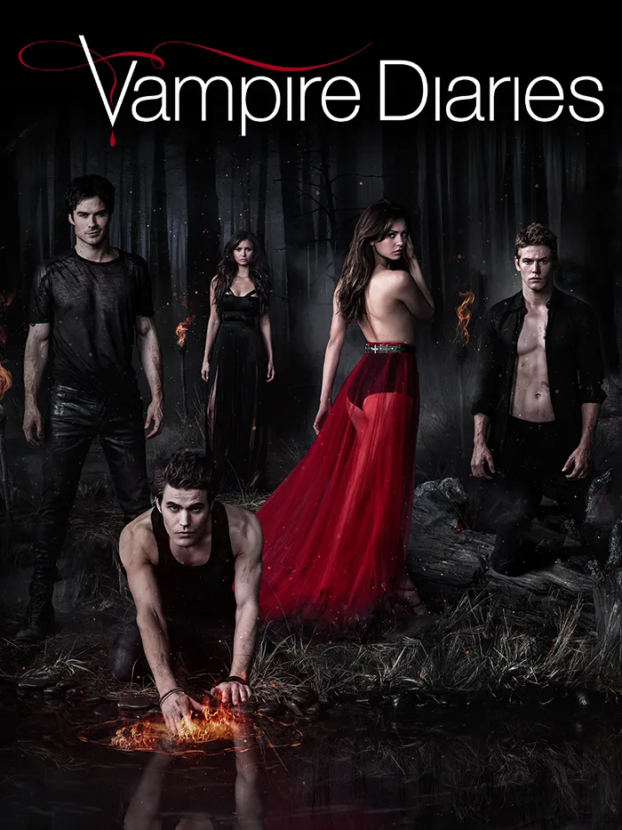
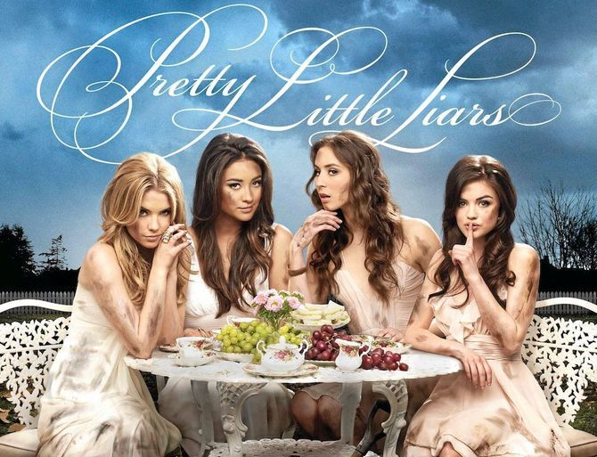

Infos sur moi 👤💡
- 1️⃣8️⃣ ANS (bientôt 19)
- 📍 Paris
- 🇫🇷🇵🇹🇩🇿

Je suis en première année du Global BBA. Je fais cette école car j'aimerai travailler dans le marketing ou la communication de luxe !
J'aime les voyages car ils me permettent de découvrir des nouvelles cultures, de nouvelles personnes. J'aimerai faire des voyages humanitaires pour venir en aide à d'autres personnes. Pour l'instant, j'ai visité la France (logique), l'Angleterre, l'Irlande, le Portugal, l'Espagne et la République Dominicaine. Bien sur,, je veux voyager dans beaucoup d'autres pays ! Ma destination de rêve est la Polynésie Francaise : Bora Bora & Tahiti 🇵🇫

J'ai une apétence pour la mode et les cosmétiques. Je suis surtout attirée par la mode et les cosmétiques de luxe, je voudrai d'ailleurs travailler dans ces domaines. Même si je voudrai travailler dans le luxe, ma marque de vêtements préférée est Zara ! Un basique mais qui fait toujours l'affaire !
J'adore cuisiner, que ce soit pour ma famille, mes amis ou moi-même. J'aime tester de nouvelles recettes car je suis très gourmande. Bien sûr, j'adore aussi aller au restaurant ou dans des fast food 🍔 Mon type de restaurant préféré est italien ! J'adore leur nourriture ! J'aime beaucoup les spécialités indiennes également ! Ou alors en fast food un bon burger me satisfera toujours !!
Je suis une personne qui adore aller au cinéma ! Découvrir de nouveaux films, passer un bon moment avec du pop-corn 🍿 Mon genre de films est les films d'action. Mes films préférés sont les Fast and Furious 🚘 Pour les séries, j'aime un peu de tout, mais je préfère celle où il y a de l'action aussi. Mes deux séries préférées sont Vampire Diaries & Pretty Little Liars.
 


